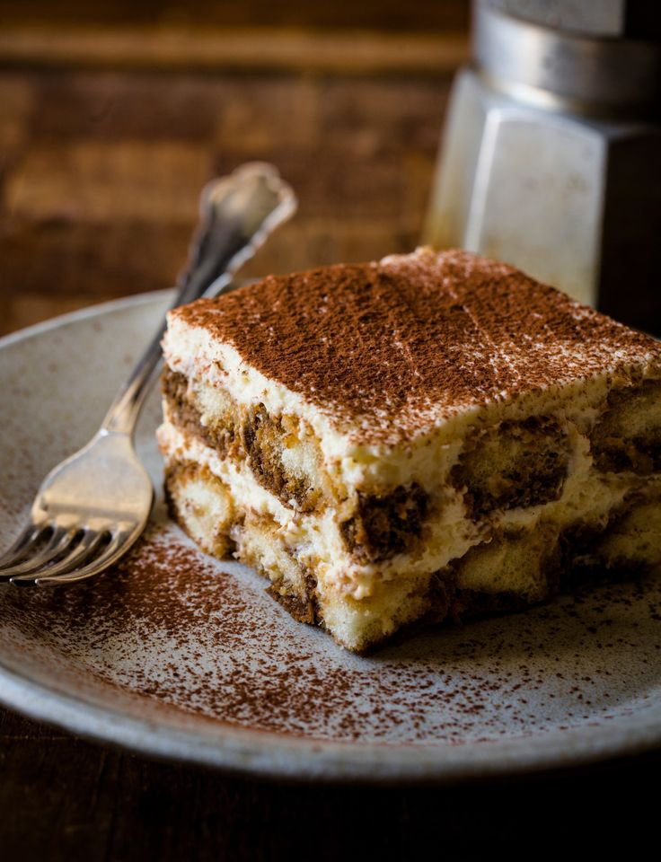

Tiramisu Recipe

Ingredients:
- 1 cup mascarpone cheese
- 1 cup heavy cream
- 1/4 cup granulated sugar
- 1 teaspoon vanilla extract
- 2 cups brewed espresso, cooled
- 1/4 cup coffee liqueur (optional)
- 24 ladyfinger cookies
- Cocoa powder, for dusting
Instructions:
- In a mixing bowl, beat mascarpone cheese, heavy cream, sugar, and vanilla extract until stiff peaks form.
- In a shallow dish, combine brewed espresso and coffee liqueur.
- Dip ladyfinger cookies into the espresso mixture, briefly soaking each side.
- Arrange a layer of soaked ladyfingers in the bottom of a serving dish.
- Spread half of the mascarpone mixture over the ladyfingers.
- Repeat layers with remaining ladyfingers and mascarpone mixture.
- Refrigerate tiramisu for at least 4 hours or overnight.
- Before serving, dust the top with cocoa powder.
- Slice and enjoy this classic Italian dessert!